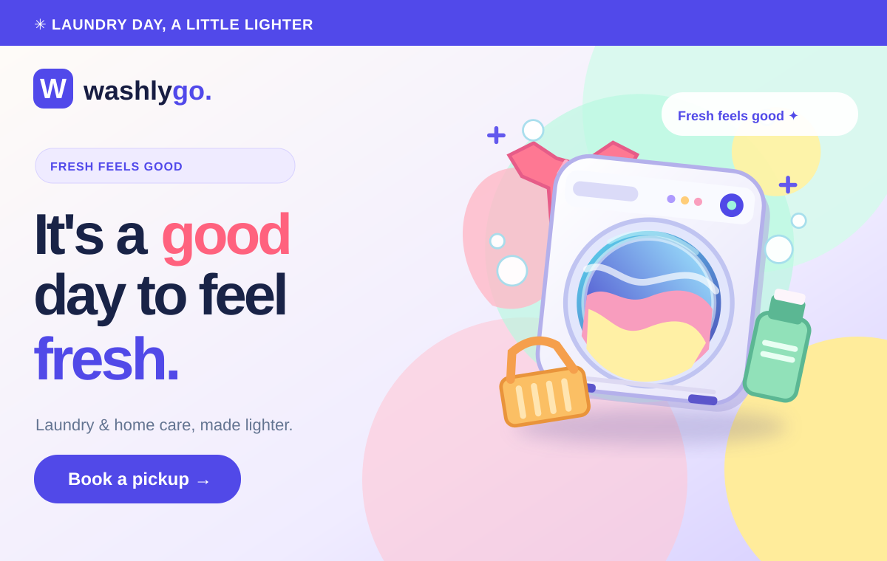

PRODUCT DESIGN / FULL-STACK WEB / 2026
Washly Go V3.
A bright, responsive service-booking experience for laundry and home care with a Node.js API, protected staff endpoints and a deployment-safe demonstration mode.

Designed illustration using Washly Go's source hero graphic; not a live screenshot.
Problem and approach
The original version had inconsistent mobile navigation, a plain visual identity, unvalidated request fields and an unauthenticated customer-orders endpoint. V3 introduces a consistent colorful design system, improved request journeys and safer backend separation.
Features
Home, Services, Book Pickup, Contact, About and Staff Desk views share consistent navigation and responsive styling. The booking form supports five cleaning services, date/time input, request confirmation messaging and input validation. Contact messages use a separate API endpoint.
Engineering
Vanilla HTML/CSS/JavaScript, Node.js, Express and a MongoDB-backed production storage adapter. Admin endpoints require a server-side secret token. Frontend strings are rendered safely, input validation rejects malformed requests, and API write endpoints have rate limiting.
Public demo & limitations
The deployed V3 preview runs with DEMO_MODE=true. Requests produce simulated references; no customer booking or contact message is saved or delivered, and no pickup is confirmed. Production service requires a protected admin key, database credentials, operational policies and real end-to-end acceptance testing.